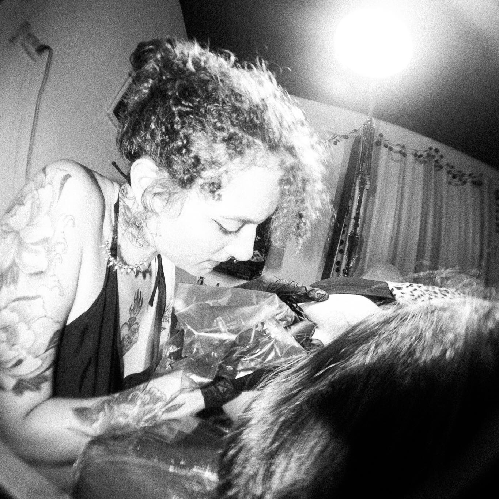
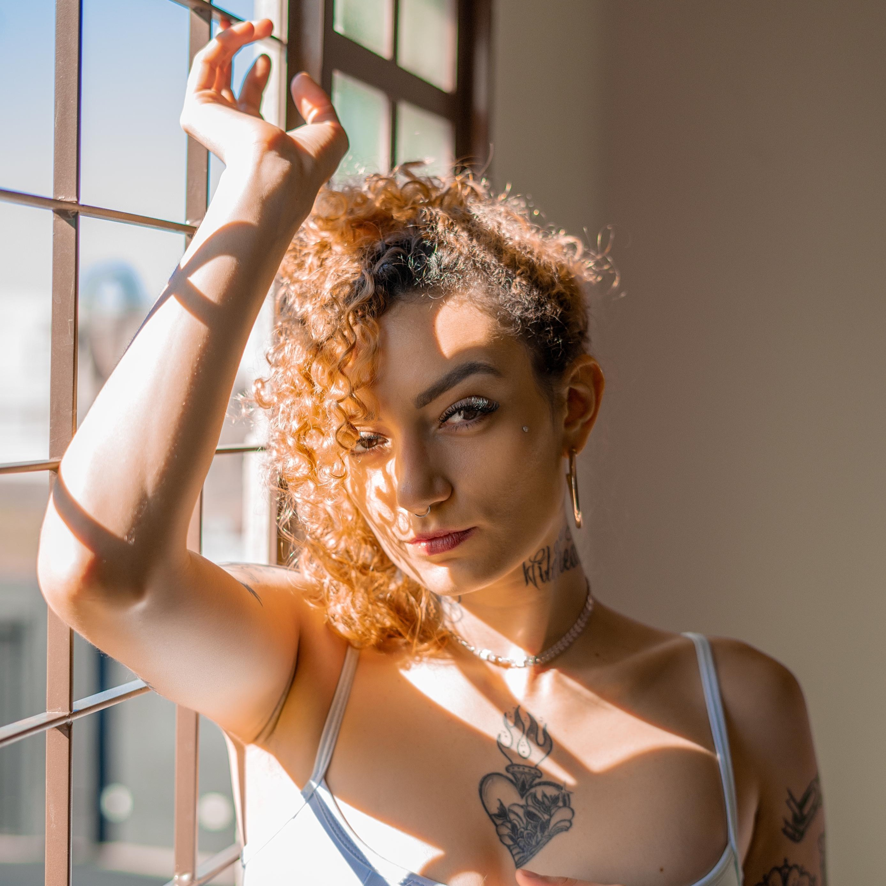

A jornada artística tem sido uma parte integral da minha vida desde o ano de 2019. Desde o início, minha paixão pelo estilo blackwork tem sido a força motriz por trás de cada traço que coloco na pele dos meus clientes. A busca incessante por alcançar e desenvolver um estilo único sempre foi meu objetivo principal. Minha jornada começou em Ituiutaba, MG, e desde então, atravessei fronteiras, deixando minha marca na Bahia antes de finalmente encontrar meu lar em Franca.
Cada local que passei contribuiu para o meu crescimento como artista, adicionando uma camada única à minha abordagem. A tatuagem não é apenas uma profissão para mim; é uma paixão que me consumiu desde o momento em que a descobri. Abandonei tudo para seguir esse chamado artístico, e desde então, nunca olhei para trás. A tatuagem tornou-se a linguagem pela qual expresso meu amor pela arte, mesclando traços marcados e delicados, sempre com a essência distintiva do blackwork.
Desenhar tem sido uma parte intrínseca da minha identidade desde a infância, e a arte, para mim, é a forma mais pura de amor. Cada obra é uma manifestação cuidadosa e respeitosa do meu apreço pela expressão artística. Na tatuagem, encontrei minha bússola criativa, orientando-me e impulsionando-me a cada sessão. A arte, para mim, é uma libertação diária. Cada traço, cada linha, é uma extensão da minha alma, uma narrativa visual que conta histórias sem palavras. A tatuagem, em particular, destaca-se como a forma mais viva de expressão, onde a pele se torna a tela e as emoções são imortalizadas em tinta.
Assim, minha jornada na tatuagem não é apenas uma carreira; é um compromisso contínuo com a busca da beleza, da autenticidade e da liberdade artística.Cada dia é uma nova oportunidade de criar, de se conectar com as histórias daqueles que confiam em mim para deixar uma marca duradoura em seus corpos.Assim, minha jornada na tatuagem não é apenas uma carreira; é um compromisso contínuo com a busca da beleza, da autenticidade e da liberdade artística. Cada dia é uma nova oportunidade de criar, de se conectar com as histórias daqueles que confiam em mim para deixar uma marca duradoura em seus corpos.
